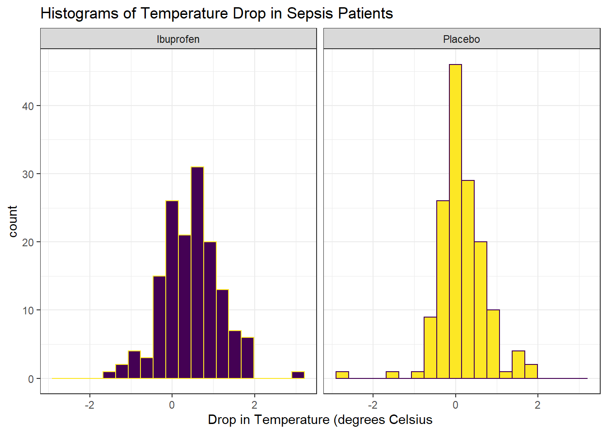
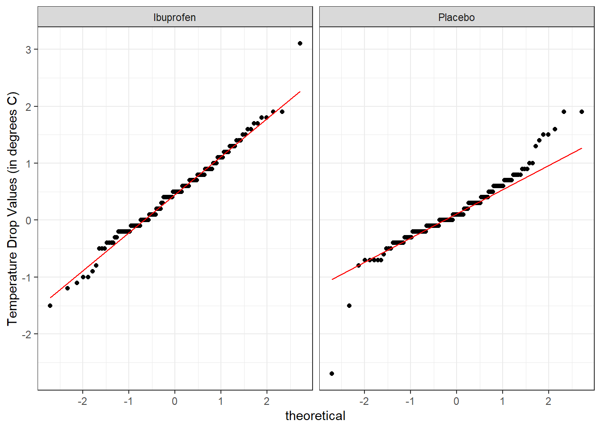
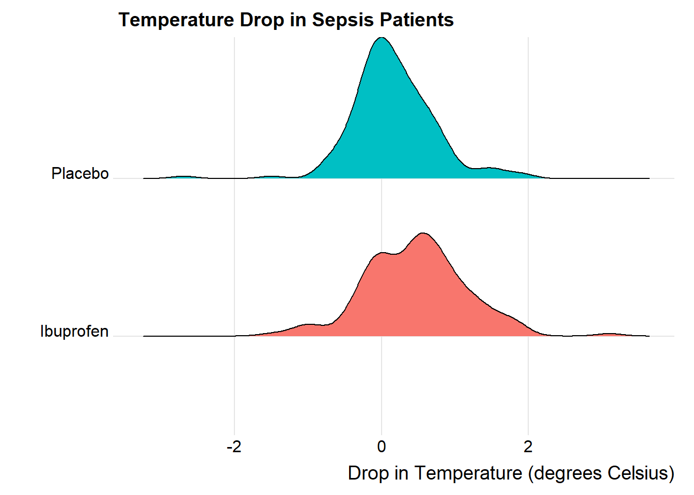

Chapter 18 The Ibuprofen in Sepsis Randomized Clinical Trial
Our next study is a randomized controlled trial comparing ibuprofen vs. placebo in patients with sepsis, which uses an independent samples design to compare two samples of quantitative data. We will be working with a sample from the Ibuprofen in Sepsis study, which is also studied in Dupont (2002). Quoting the abstract from Bernard et al. (1997):
Ibuprofen has been shown to have effects on sepsis in humans, but because of their small samples (fewer than 30 patients), previous studies have been inadequate to assess effects on mortality. We sought to determine whether ibuprofen can alter rates of organ failure and mortality in patients with the sepsis syndrome, how the drug affects the increased metabolic demand in sepsis (e.g., fever, tachypnea, tachycardia, hypoxemia, and lactic acidosis), and what potential adverse effects the drug has in the sepsis syndrome.
In this study, patients meeting specific criteria (including elevated temperature) for a diagnosis of sepsis were recruited if they fulfilled an additional set of study criteria in the intensive care unit at one of seven participating centers.
The full trial involved 455 patients, of which our sample includes 300. 150 of our patients were randomly assigned to the Ibuprofen group and 150 to the Placebo group11. I picked the sepsis sample we will work with excluding patients with missing values for our outcome of interest, and then selected a random sample of 150 Ibuprofen and 150 Placebo patients from the rest of the group, and converted the temperatures and changes from Fahrenheit to Celsius. The data are gathered in the sepsis data file.
For the moment, we focus on two variables:
- treat, which specifies the treatment group (intravenous Ibuprofen or intravenous Placebo), which was assigned via randomization to each patient, and
- temp_drop, the outcome of interest, measured as the change from baseline to 2 hours later in degrees Celsius. Positive values indicate improvement, that is, a drop in temperature over the 2 hours following the baseline measurement.
The sepsis.csv file also contains each subject’s
- id, which is just a code
- race (three levels: White, AfricanA or Other)
- apache = baseline APACHE II score, a severity of disease score ranging from 0 to 71 with higher scores indicating more severe disease and a higher mortality risk
- temp_0 = baseline temperature, degrees Celsius.
but for the moment, we won’t worry about those.
id treat race apache
Length:300 Ibuprofen:150 AfricanA: 80 Min. : 0.0
Class :character Placebo :150 Other : 23 1st Qu.:10.0
Mode :character White :197 Median :14.0
Mean :15.4
3rd Qu.:20.0
Max. :35.0
temp_0 temp_drop
Min. :33.10 Min. :-2.7000
1st Qu.:37.48 1st Qu.:-0.1000
Median :38.20 Median : 0.3000
Mean :38.00 Mean : 0.3083
3rd Qu.:38.70 3rd Qu.: 0.7000
Max. :41.70 Max. : 3.1000 18.1 Comparing Two Groups
In making a choice between two alternatives, questions such as the following become paramount.
- Is there a status quo?
- Is there a standard approach?
- What are the costs of incorrect decisions?
- Are such costs balanced?
The process of comparing the means/medians/proportions/rates of the populations represented by two independently obtained samples can be challenging, and such an approach is not always the best choice. Often, specially designed experiments can be more informative at lower cost (i.e. smaller sample size). As one might expect, using these more sophisticated procedures introduces trade-offs, but the costs are typically small relative to the gain in information.
When faced with such a comparison of two alternatives, a test based on paired data is often much better than a test based on two distinct, independent samples. Why? If we have done our experiment properly, the pairing lets us eliminate background variation that otherwise hides meaningful differences.
18.1.1 Model-Based Comparisons and ANOVA/Regression
Comparisons based on independent samples of quantitative variables are also frequently accomplished through other equivalent methods, including the analysis of variance approach and dummy variable regression, both of which produce identical confidence intervals to the pooled variance t test for the same comparison.
We will also discuss some of the main ideas in developing, designing and analyzing statistical experiments, specifically in terms of making comparisons. The ideas we will present in this section allow for the comparison of more than two populations in terms of their population means. The statistical techniques employed analyze the sample variance in order to test and estimate the population means and for this reason the method is called the analysis of variance (ANOVA), and we will discuss this approach alone, and within the context of a linear regression model using dummy or indicator variables.
18.2 Key Questions for Comparing with Independent Samples
18.2.1 What is the population under study?
- All patients in the intensive care unit with sepsis who meet the inclusion and exclusion criteria of the study, at the entire population of health centers like the ones included in the trial.
18.2.2 What is the sample? Is it representative of the population?
- The sample consists of 300 patients. It is a convenient sample from the population under study.
- This is a randomized clinical trial. 150 of the patients were assigned to Ibuprofen, and the rest to Placebo. It is this treatment assignment that is randomized, not the selection of the sample as a whole.
- In expectation, randomization of individuals to treatments, as in this study, should be expected to eliminate treatment selection bias.
18.2.3 Who are the subjects / individuals within the sample?
- 150 patients who received Ibuprofen and a completely different set of 150 patients who received Placebo.
- There is no match or link between the patients. They are best thought of as independent samples.
18.2.4 What data are available on each individual?
- The key variables are the treatment indicator (Ibuprofen or Placebo) and the outcome (drop in temperature in the 2 hours following administration of the randomly assigned treatment.)
18.2.5 RCT Caveats
The placebo-controlled, double-blind randomized clinical trial, especially if pre-registered, is often considered the best feasible study for assessing the effectiveness of a treatment. While that’s not always true, it is a very solid design. The primary caveat is that the patients who are included in such trials are rarely excellent representations of the population of potentially affected patients as a whole.
18.3 Exploratory Data Analysis
Consider the following boxplot with violin of the temp_drop data within each treat group.
ggplot(sepsis, aes(x = treat, y = temp_drop, fill = treat)) +
geom_violin() +
geom_boxplot(width = 0.3, fill = "white") +
scale_fill_viridis_d() +
guides(fill = FALSE) +
labs(title = "Boxplot of Temperature Drop in Sepsis Patients",
x = "", y = "Drop in Temperature (degrees C)") +
coord_flip() +
theme_bw()
Next, we’ll consider faceted histograms of the data.
ggplot(sepsis, aes(x = temp_drop, fill = treat, color = treat)) +
geom_histogram(bins = 20) +
scale_fill_viridis_d() +
scale_color_viridis_d(direction = -1) +
guides(fill = FALSE, color = FALSE) +
labs(title = "Histograms of Temperature Drop in Sepsis Patients",
x = "Drop in Temperature (degrees Celsius") +
theme_bw() +
facet_wrap(~ treat)
Here’s a pair of Normal Q-Q plots. It’s not hard to use a Normal model to approximate the Ibuprofen data, but such a model is probably not a good choice for the Placebo results.
ggplot(sepsis, aes(sample = temp_drop)) +
geom_qq() + geom_qq_line(col = "red") +
theme_bw() +
facet_wrap(~ treat) +
labs(y = "Temperature Drop Values (in degrees C)")
We’ll could perhaps also look at a ridgeline plot.
ggplot(sepsis, aes(x = temp_drop, y = treat, fill = treat)) +
ggridges::geom_density_ridges(scale = 0.9) +
guides(fill = FALSE) +
labs(title = "Temperature Drop in Sepsis Patients",
x = "Drop in Temperature (degrees Celsius)", y = "") +
ggridges::theme_ridges()Picking joint bandwidth of 0.182
The center of the ibuprofen distribution is shifted a bit towards the more positive (greater improvement) direction, it seems, than is the distribution for the placebo patients. This conclusion matches what we see in some key numerical summaries, within the treatment groups.
treat min Q1 median Q3 max mean sd n missing
1 Ibuprofen -1.5 0.000 0.5 0.9 3.1 0.4640000 0.6877919 150 0
2 Placebo -2.7 -0.175 0.1 0.4 1.9 0.1526667 0.5709637 150 018.4 Estimating the Difference in Population Means
Next, we will build a point estimate and 90% confidence interval for the difference between the mean temp_drop if treated with Ibuprofen and the mean temp_drop if treated with Placebo. We’ll use a regression model with a single predictor (the treat group) to do this.
model_sep <- lm(temp_drop ~ treat == "Ibuprofen", data = sepsis)
tidy(model_sep, conf.int = TRUE, conf.level = 0.90) %>%
kable(digits = 3)| term | estimate | std.error | statistic | p.value | conf.low | conf.high |
|---|---|---|---|---|---|---|
| (Intercept) | 0.153 | 0.052 | 2.958 | 0.003 | 0.068 | 0.238 |
| treat == “Ibuprofen”TRUE | 0.311 | 0.073 | 4.266 | 0.000 | 0.191 | 0.432 |
The point estimate for the “Ibuprofen - Placebo” difference in population means is 0.311 degrees C, and the 90% confidence interval is (0.191, 0.432) degrees C.
We could also have run the model like this:
model_sep2 <- lm(temp_drop ~ treat, data = sepsis)
tidy(model_sep2, conf.int = TRUE, conf.level = 0.90) %>%
kable(digits = 3)| term | estimate | std.error | statistic | p.value | conf.low | conf.high |
|---|---|---|---|---|---|---|
| (Intercept) | 0.464 | 0.052 | 8.991 | 0 | 0.379 | 0.549 |
| treatPlacebo | -0.311 | 0.073 | -4.266 | 0 | -0.432 | -0.191 |
and would therefore conclude that the Placebo - Ibuprofen difference was estimated as -0.311, with 90% confidence interval (-0.432, -0.191), which is of course equivalent to our previous estimate.
Fundamentally, this regression model approach is identical to a two-sample t test, assuming equal population variances, also called a pooled t test. This is just one possible way for us to estimate the difference between population means, as it turns out.
18.5 t-based CI for population mean1 - mean2 difference
18.5.1 The Pooled t procedure
The most commonly used t-procedure for building a confidence interval assumes not only that each of the two populations being compared follows a Normal distribution, but also that they have the same population variance. This is the pooled t-test, and it is what people usually mean when they describe a two-sample t test.
Two Sample t-test
data: temp_drop by treat
t = 4.2656, df = 298, p-value = 2.68e-05
alternative hypothesis: true difference in means is not equal to 0
90 percent confidence interval:
0.1909066 0.4317600
sample estimates:
mean in group Ibuprofen mean in group Placebo
0.4640000 0.1526667 Or, we can use tidy on this object:
tt1 <- sepsis %$% t.test(temp_drop ~ treat,
conf.level = 0.90,
alt = "two.sided",
var.equal = TRUE)
tidy(tt1)# A tibble: 1 x 10
estimate estimate1 estimate2 statistic p.value parameter conf.low conf.high
<dbl> <dbl> <dbl> <dbl> <dbl> <dbl> <dbl> <dbl>
1 0.311 0.464 0.153 4.27 2.68e-5 298 0.191 0.432
# ... with 2 more variables: method <chr>, alternative <chr>18.5.2 Using linear regression to obtain a pooled t confidence interval
As we’ve seen, and will demonstrate again below, a linear regression model, using the same outcome and predictor (group) as the pooled t procedure, produces the same confidence interval, again, under the assumption that the two populations we are comparing follow a Normal distribution with the same (population) variance.
# A tibble: 2 x 7
term estimate std.error statistic p.value conf.low conf.high
<chr> <dbl> <dbl> <dbl> <dbl> <dbl> <dbl>
1 (Intercept) 0.464 0.0516 8.99 2.91e-17 0.379 0.549
2 treatPlacebo -0.311 0.0730 -4.27 2.68e- 5 -0.432 -0.191We see that our point estimate from the linear regression model is that the difference in temp_drop is -0.3113333, where Ibuprofen subjects have higher temp_drop values than do Placebo subjects, and that the 90% confidence interval for this difference ranges from -0.43176 to -0.1909066.
We can obtain a t-based confidence interval for each of the parameter estimates in a linear model directly using tidy from the broom package. Linear models usually summarize only the estimate and standard error. Remember that a reasonable approximation in large samples to a 95% confidence interval for a regression estimate (slope or intercept) can be obtained from estimate plus or minus two times the standard error.
| term | estimate | std.error | statistic | p.value | conf.low | conf.high |
|---|---|---|---|---|---|---|
| (Intercept) | 0.464 | 0.052 | 8.991 | 0 | 0.362 | 0.566 |
| treatPlacebo | -0.311 | 0.073 | -4.266 | 0 | -0.455 | -0.168 |
So, in the case of the treatPlacebo estimate, we can obtain an approximate 95% confidence interval with (-0.457, -0.165). Compare this to the 95% confidence interval available from the model directly, shown in the tidied output above, or with the confint command below, and you’ll see only a small difference.
Note that we can also use summary and confint to build our estimates.
Call:
lm(formula = temp_drop ~ treat, data = sepsis)
Residuals:
Min 1Q Median 3Q Max
-2.85267 -0.36400 -0.05267 0.34733 2.63600
Coefficients:
Estimate Std. Error t value Pr(>|t|)
(Intercept) 0.46400 0.05161 8.991 < 2e-16 ***
treatPlacebo -0.31133 0.07299 -4.266 2.68e-05 ***
---
Signif. codes: 0 '***' 0.001 '**' 0.01 '*' 0.05 '.' 0.1 ' ' 1
Residual standard error: 0.6321 on 298 degrees of freedom
Multiple R-squared: 0.05755, Adjusted R-squared: 0.05438
F-statistic: 18.2 on 1 and 298 DF, p-value: 2.68e-05 2.5 % 97.5 %
(Intercept) 0.3624351 0.5655649
treatPlacebo -0.4549679 -0.167698818.5.3 The Welch t procedure
The default confidence interval based on the t test for independent samples in R uses something called the Welch test, in which the two populations being compared are not assumed to have the same variance. Each population is assumed to follow a Normal distribution.
Welch Two Sample t-test
data: temp_drop by treat
t = 4.2656, df = 288.24, p-value = 2.706e-05
alternative hypothesis: true difference in means is not equal to 0
90 percent confidence interval:
0.1908939 0.4317728
sample estimates:
mean in group Ibuprofen mean in group Placebo
0.4640000 0.1526667 Tidying works in this situation, too.
# A tibble: 1 x 10
estimate estimate1 estimate2 statistic p.value parameter conf.low conf.high
<dbl> <dbl> <dbl> <dbl> <dbl> <dbl> <dbl> <dbl>
1 0.311 0.464 0.153 4.27 2.71e-5 288. 0.191 0.432
# ... with 2 more variables: method <chr>, alternative <chr>When there is a balanced design, that is, when the same number of observations appear in each of the two samples, then the Welch t test and the Pooled t test produce the same confidence interval. Differences appear if the sample sizes in the two groups being compared are different.
18.6 Wilcoxon-Mann-Whitney “Rank Sum” CI
As in the one-sample case, a rank-based alternative attributed to Wilcoxon (and sometimes to Mann and Whitney) provides a two-sample comparison of the pseudomedians in the two treat groups in terms of temp_drop. This is called a rank sum test, rather than the Wilcoxon signed rank test that is used for inference about a single sample. Here’s the resulting 90% confidence interval for the difference in pseudomedians.
wt <- sepsis %$% wilcox.test(temp_drop ~ treat,
conf.int = TRUE, conf.level = 0.90,
alt = "two.sided")
wt
Wilcoxon rank sum test with continuity correction
data: temp_drop by treat
W = 14614, p-value = 7.281e-06
alternative hypothesis: true location shift is not equal to 0
90 percent confidence interval:
0.1999699 0.4000330
sample estimates:
difference in location
0.3000368 # A tibble: 1 x 7
estimate statistic p.value conf.low conf.high method alternative
<dbl> <dbl> <dbl> <dbl> <dbl> <chr> <chr>
1 0.300 14614. 7.28e-6 0.200 0.400 Wilcoxon rank sum ~ two.sided 18.7 Bootstrapping: A More Robust Approach
Within a script called Love-boost.R, I have provided the following R code to create a function called bootdif.
bootdif <-
function(y, g, conf.level=0.95, B.reps = 2000) {
lowq = (1 - conf.level)/2
g <- as.factor(g)
a <- attr(Hmisc::smean.cl.boot(y[g==levels(g)[1]], B=B.reps, reps=TRUE),'reps')
b <- attr(Hmisc::smean.cl.boot(y[g==levels(g)[2]], B=B.reps, reps=TRUE),'reps')
meandif <- diff(tapply(y, g, mean, na.rm=TRUE))
a.b <- quantile(b-a, c(lowq,1-lowq))
res <- c(meandif, a.b)
names(res) <- c('Mean Difference',lowq, 1-lowq)
res
}Running this code will place a new function called bootdif in your environment, which will help us calculate an appropriate confidence interval using a bootstrap procedure. The bootdif function contained in the Love-boost.R script is a slightly edited version of the function at http://biostat.mc.vanderbilt.edu/wiki/Main/BootstrapMeansSoftware.
18.7.1 Bootstrap CI for the Sepsis study
Note that this approach uses a comma to separate the outcome variable (here, temp_drop) from the variable identifying the exposure groups (here, treat).
Mean Difference 0.05 0.95
-0.3113333 -0.4313667 -0.1833000 This approach calculates a 90% confidence interval for the difference in means between the two treatment groups. Note that the sign is in the opposite direction from what we’ve seen in our previous work. We can tell from the mean difference (and the summarized means from the data in each group) that this approach is finding a confidence interval using a bootstrap procedure for the Placebo - Ibuprofen difference, specifically (-0.431, -0.183).
treat min Q1 median Q3 max mean sd n missing
1 Ibuprofen -1.5 0.000 0.5 0.9 3.1 0.4640000 0.6877919 150 0
2 Placebo -2.7 -0.175 0.1 0.4 1.9 0.1526667 0.5709637 150 0To find a confidence interval using this bootstrap approach for the Ibuprofen - Placebo difference, we just need to switch the signs, and conclude that the 90% bootstrap confidence interval for that difference would be (0.183, 0.431).
18.8 Summary: Specifying A Two-Sample Study Design
These questions will help specify the details of the study design involved in any comparison of two populations on a quantitative outcome, perhaps with means.
- What is the outcome under study?
- What are the (in this case, two) treatment/exposure groups?
- Were the data collected using matched / paired samples or independent samples?
- Are the data a random sample from the population(s) of interest? Or is there at least a reasonable argument for generalizing from the sample to the population(s)?
- What is the significance level (or, the confidence level) we require here?
- Are we doing one-sided or two-sided testing/confidence interval generation?
- If we have paired samples, did pairing help reduce nuisance variation?
- If we have paired samples, what does the distribution of sample paired differences tell us about which inferential procedure to use?
- If we have independent samples, what does the distribution of each individual sample tell us about which inferential procedure to use?
18.9 Results for the sepsis study
- The outcome is
temp_drop, the change in body temperature (in \(^{\circ}\)C) from baseline to 2 hours later, so that positive numbers indicate drops in temperature (a good outcome.) - The groups are Ibuprofen and Placebo as contained in the
treatvariable in thesepsistibble. - The data were collected using independent samples. The Ibuprofen subjects are not matched or linked to individual Placebo subjects - they are separate groups.
- The subjects of the study aren’t drawn from a random sample of the population of interest, but they are randomly assigned to their respective treatments (Ibuprofen and Placebo) which will provide the reasoned basis for our inferences.
- We’ll use a 10% significance level (or 90% confidence level) in this setting, as we did in our previous work on these data.
- We’ll use a two-sided testing and confidence interval approach.
Questions 7 and 8 don’t apply, because these are independent samples of data, rather than paired samples.
To address question 9, we’ll need to look at the data in each sample, as we did previously to allow us to assess the Normality of the distributions of (separately) the temp_drop results in the Ibuprofen and Placebo groups. We’ll repeat those below.
ggplot(sepsis, aes(x = treat, y = temp_drop, fill = treat)) +
geom_violin() +
geom_boxplot(width = 0.3, fill = "white") +
scale_fill_viridis_d() +
guides(fill = FALSE) +
labs(title = "Boxplot of Temperature Drop in Sepsis Patients",
x = "", y = "Drop in Temperature (degrees C)") +
coord_flip() +
theme_bw()
ggplot(sepsis, aes(sample = temp_drop)) +
geom_qq() + geom_qq_line(col = "red") +
theme_bw() +
facet_wrap(~ treat) +
labs(y = "Temperature Drop Values (in degrees C)")From these plots we conclude that the data in the Ibuprofen sample follow a reasonably Normal distribution, but this isn’t quite as true for the Placebo sample. It’s hard to know whether the apparent Placebo group outliers will affect whether the Normal distribution assumption is reasonable, so we can see if the confidence intervals change much when we don’t assume Normality (for instance, comparing the bootstrap to the t-based approaches), as a way of understanding whether a Normal model has a large impact on our conclusions.
18.9.1 Sepsis Estimation Results
Here’s a set of confidence interval estimates (we’ll use 90% confidence here) using the methods discussed in this Chapter.
treat min Q1 median Q3 max mean sd n missing
1 Ibuprofen -1.5 0.000 0.5 0.9 3.1 0.4640000 0.6877919 150 0
2 Placebo -2.7 -0.175 0.1 0.4 1.9 0.1526667 0.5709637 150 0s_pooled_t_test <- sepsis %$% t.test(temp_drop ~ treat,
conf.level = 0.90,
alt = "two.sided",
var.equal = TRUE)
tidy(s_pooled_t_test) %>%
select(conf.low, conf.high)# A tibble: 1 x 2
conf.low conf.high
<dbl> <dbl>
1 0.191 0.432s_welch_t_test <- sepsis %$% t.test(temp_drop ~ treat,
conf.level = 0.90,
alt = "two.sided",
var.equal = FALSE)
tidy(s_welch_t_test) %>%
select(estimate, conf.low, conf.high)# A tibble: 1 x 3
estimate conf.low conf.high
<dbl> <dbl> <dbl>
1 0.311 0.191 0.432s_wilcoxon_test <- sepsis %$% wilcox.test(temp_drop ~ treat,
conf.int = TRUE, conf.level = 0.90,
alt = "two.sided")
tidy(s_wilcoxon_test) %>%
select(estimate, conf.low, conf.high)# A tibble: 1 x 3
estimate conf.low conf.high
<dbl> <dbl> <dbl>
1 0.300 0.200 0.400Mean Difference 0.05 0.95
-0.3113333 -0.4313667 -0.1833000 | Procedure | Compares… | Point Estimate | 90% CI |
|---|---|---|---|
| Pooled t | Means | 0.311 | (0.191, 0.432) |
| Welch t | Means | 0.311 | (0.191, 0.432) |
| Bootstrap | Means | 0.311 | (0.183, 0.431) |
| Wilcoxon rank sum | Pseudo-Medians | 0.3 | (0.2, 0.4) |
What conclusions can we draw in this setting?
18.10 Categorizing the Outcome and Comparing Rates
Suppose we were interested in comparing the percentage of patients in each arm of the trial (Ibuprofen vs. Placebo) that showed an improvement in their temperature (temp_drop > 0). To build the cross-tabulation of interest, we could create a new variable, called dropped which indicates whether the subject’s temperature dropped, and then use tabyl.
sepsis <- sepsis %>%
mutate(dropped = ifelse(temp_drop > 0, "Drop", "No Drop"))
sepsis %>% tabyl(treat, dropped) treat Drop No Drop
Ibuprofen 107 43
Placebo 80 70Our primary interest is in comparing the percentage of Ibuprofen patients whose temperature dropped to the percentage of Placebo patients whose temperature dropped.
sepsis %>% tabyl(treat, dropped) %>%
adorn_totals() %>%
adorn_percentages(denom = "row") %>%
adorn_pct_formatting(digits = 1) %>%
adorn_ns(position = "front") treat Drop No Drop
Ibuprofen 107 (71.3%) 43 (28.7%)
Placebo 80 (53.3%) 70 (46.7%)
Total 187 (62.3%) 113 (37.7%)18.11 Estimating the Difference in Proportions
In our sample, 71.3% of the Ibuprofen subjects, and 53.3% of the Placebo subjects, experienced a drop in temperature. So our point estimate of the difference in percentages would be 18.0 percentage points, but we will usually set this instead in terms of proportions, so that the difference is 0.180.
Now, we’ll find a confidence interval for that difference, which we can do in several ways, including the twoby2 function in the Epi package.
2 by 2 table analysis:
------------------------------------------------------
Outcome : Drop
Comparing : Ibuprofen vs. Placebo
Drop No Drop P(Drop) 90% conf. interval
Ibuprofen 107 43 0.7133 0.6490 0.7701
Placebo 80 70 0.5333 0.4661 0.5993
90% conf. interval
Relative Risk: 1.3375 1.1492 1.5567
Sample Odds Ratio: 2.1773 1.4583 3.2509
Conditional MLE Odds Ratio: 2.1716 1.4177 3.3437
Probability difference: 0.1800 0.0881 0.2677
Exact P-value: 0.0019
Asymptotic P-value: 0.0014
------------------------------------------------------While there is a lot of additional output here, we’ll look for now just at the Probability difference row, where we see the point estimate (0.180) and the 90% confidence interval estimate for the difference in proportions (0.088, 0.268) comparing Ibuprofen vs. Placebo for the outcome of Dropping in Temperature.
More on estimation of the difference in population proportions will be found later.
References
Bernard, Gordon R., Arthur P. Wheeler, James A. Russell, Roland Schein, Warren R. Summer, Kenneth P. Steinberg, William J. Fulkerson, et al. 1997. “The Effects of Ibuprofen on the Physiology and Survival of Patients with Sepsis.” New England Journal of Medicine 336: 912–18. http://www.nejm.org/doi/full/10.1056/NEJM199703273361303#t=article.
Dupont, William D. 2002. Statistical Modeling for Biomedical Researchers. New York: Cambridge University Press.
This was a double-blind study, where neither the patients nor their care providers know, during the execution of the trial, what intervention group was assigned to each patient.↩︎